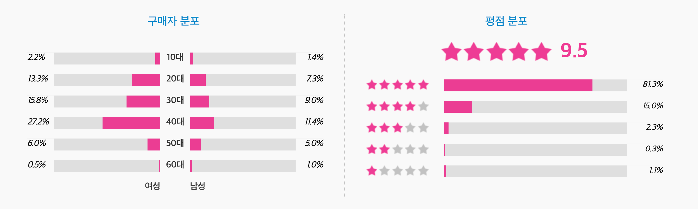

칼 세이건 (지은이),홍승수 (옮긴이) 사이언스북스 2006-12-20 원제 : Cosmos (1980년)

북플 bookple

코스모스
책 두께가 목침만한 이유가 있었다. 인류 탐험의 역사, 천문학, 점성술, 현대물리학, 신화, 생물학, 진화론, 그리스 과학철학 등 방대한 주제를 넘나들며 썰을 푼다. 우주 과학에 관한 무수한 채널을 열어주기 때문에 생명과 우주에 관심 많은 과학 꿈나무가 읽으면 이 책을 든든한 발판으로 삼을 수 있을 것 같다. 사실 나로서는 올해가 가기 전에 인구에 회자되는 고전 한 권을 아무거나 하나라도 독파해보자는 취지로 펼쳐든 책이었는데 맙소사 그야말로 무시무시한 수면유도서적이었다. <읽다보면 잠들고 깨어나면 뒤로 돌아가서 다시 읽고 읽다보면 또 잠들고>의 무한 반복. 나야말로 혼이 비정상인가. 아니면 이거슨 설마 타임 루프? 난 지금 타임루프에 갇힌 건가? 과연 고전의 위력이란. 온 우주의 기운이 모여들어 신비현상을 체험해보게 되는 상서로운 책이다.
수양 2016-11-11 공감(25) 댓글(1)
우주와 인간
우리는 희귀종인 동시에 멸종 위기종이다. 우주적 시각에서 볼 때 우리 하나하나는 모두 귀중하다. 그러므로 누군가가 너와 다른 생각을 주장한다고 해서 그를 죽인다거나 미워해서야 되겠는가?-675p 칼 세이건은 코스모스를 말하고 있으면서도 인간에 대해 말하고 있다.
도가도비상도 2015-09-14 공감(21) 댓글(0)
보급판이지만 내용은 고급 양장판보다 뛰어난 ‘코스모스‘
'코스모스'는 내셔날지오그라피의 다큐멘터리입니다. 단순한 다큐멘터리가 아니라 전세계 시청자를 놀라게 한 걸작입니다. 이 내용을 토대로 제작된 책 보급판 '코스모스'는 싼 가격에 어마어마한 신비를 누릴 수 있도록 제작된 우리에게 도움과 이익을 주는 특혜입니다.
빅뱅 이후 지구는 아무것도 없는 황무지와 같았으나, 천천히 변화와 변화를 반복하고, 진화를 거듭하여 미토콘드리아를 만들었고 또 다른 PROCESS를 거쳐 어류, 양서류, 파충류, 조류, 포유류로 진화하는 과정이 경이롭기만 합니다. 태양계의 별들도 이런 과정을 거치지 않을 수 없었다는 가정하에 지구와 가까운 금성과 화성을 탐사하기 시작 했습니다.
요즘 작가로 활동중인 유시민 前국회의원이 세상에서 가장 재미있는 과학책으로 추천한 바로 그책 칼세이던의 '코스모스'입니다. 두께에 눌려 처음 보다가 덮고, 다시 펴고, 많은 시간이 지나고난 후 처음부터 다시 읽고 또 읽었습니다.
화성지표 실험을 위해 남극에 갔다가 유명을 달리한 과학자와 밝혀지지 않은 진실을 끌어내기 위하여 최선을 다하신 모든 과학자에게 진심으로 경의를 표하고 감사를 드립니다. 칼세이건은 강조하고 있습니다. 우리도 코스모스의 일부이며, 시적인 수사가 아니라 우주는 근본적인 의미에서 연결되어 있고, 운명도 코스모스와 깊게 관련되어 있다고 주장하고 있습니다. 또한 우주적 관점에서 본 인간의 본질과 만나게 될 것이고, 물아일체의 경지이며, 운명과도 같다는 것입니다.
은하계와 태양계의 다양한 현상들을 죽음을 불사하면서도 사실을 밝혀낸 이세상 모든 과학자들에게 진심으로 감사 드리며, 다시 한 번 고개를 숙입니다.
인문학에길을묻다 2016-09-05 공감(18) 댓글(0)